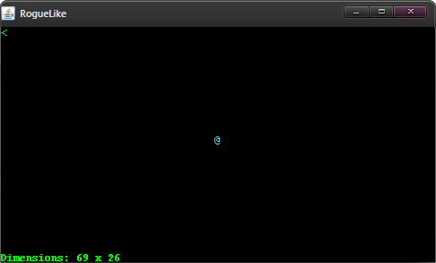

Projects
StoneQuest
StoneQuest began as a simple Roguelike application in Java back in December 2011 in order to introduce myself to game design and mechanics.
To learn more about StoneQuest, as well as the most up-to-date information about my progress, click here to visit its web page.
Past Projects
Over the years, I have written dozens of programs in my spare time; some of which are fully-functional applications that I felt fulfilled some purpose, at least at the time they were written. You can click on a project to learn more about it, including several screenshots:
Class Projects
Out of the many assignments I have had to complete during my studies, these are the more complex/interesting class projects I have done:
Network programming
Systems programming
Arduino Project
Using Arduino hardware and a cheap R/C car, I plan to write the software to autonomously drive the vehicle and perform some task; such as pathfinding between two arbitrary points and mapping (hypothetically) hazardous areas and reporting to a human controller.
You can view the web page I have created for this project here to track my progress.